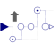

UpSampleUpsample the clocked Real input signal and provide it as clocked output signal |

|
Information
This information is part of the Modelica Standard Library maintained by the Modelica Association.
This block upsamples the clocked Real input signal u and provides it as clocked output signal y.
To be more precise: The clock of y is factor-times faster than the clock of u. At every tick of the clock of u, the value of y is set to the value of u, at intermediate ticks of clock y, the value of y is set to zero. The first activation of the clock of y coincides with the first activation of the clock of u. By default, the upsampling factor is inferred,that is, it must be defined somewhere else. If parameter inferFactor = false, then the upsampling factor is defined by the Integer parameter factor.
For signal interpolation an upsample should be followed by an appropriate filter (anti-imaging).
Examples
The following
example
samples a sine signal with a periodic clock of 20 ms period, and
then upsamples the resulting clocked signal with a factor of 3:
 |
 |
|
| model | simulation result |
The upsampling factor is explicitly given at the upSample2 block, which also makes the factor visible in the icon. For the upSample1 block the factor is inferred. As can be seen, upsample1 introduces 3 additional clock ticks for the output y. Note, the up-arrow in the icon of the upSample blocks indicates that the clocks of their outputs is faster than the clocks of their inputs.
The following
example
samples a sine signal with a periodic clock of 20 ms period,
upsamples the resulting clocked signal with a factor of 3
and applies varies filters on this signal:
 |
|
| model |
|
 |
|
| simulation result 1 |
|
 |
|
| simulation result 2 |
This model shows various possibilities to operate on an up-sampled signal: When filtering the upsampled signal with filter block FIR1 using FIR coefficients {1,1,1}, then the result is identical to a super-sampled signal (see signal FIR1.y in figure "simulation result 1"). On the other hand, when filtering the upsampled signal with filter block FIR2 using FIR coefficients {1/3, 2/3, 1, 2/3, 1/3}, then the result is a linearly interpolated super-sampled signal (see signal FIR2.y in figure "simulation result 2"). The same result can be achieved with block SuperSampleInterpolated (see signal superSampleIpo1.y in figure "simulation result 2"). The only difference are the first clock ticks, since the FIR2 signal is initialized a bit differently.
Parameters (2)
| inferFactor |
Value: true Type: Boolean Description: = true, if upsampling factor is inferred |
|---|---|
| factor |
Value: 1 Type: Integer Description: Upsampling factor >= 1 (if inferFactor=false) |
Connectors (2)
| u |
Type: RealInput Description: Connector of clocked, Real input signal |
|
|---|---|---|
| y |
Type: RealOutput Description: Connector of clocked, Real output signal (clock of y is faster as clock of u) |